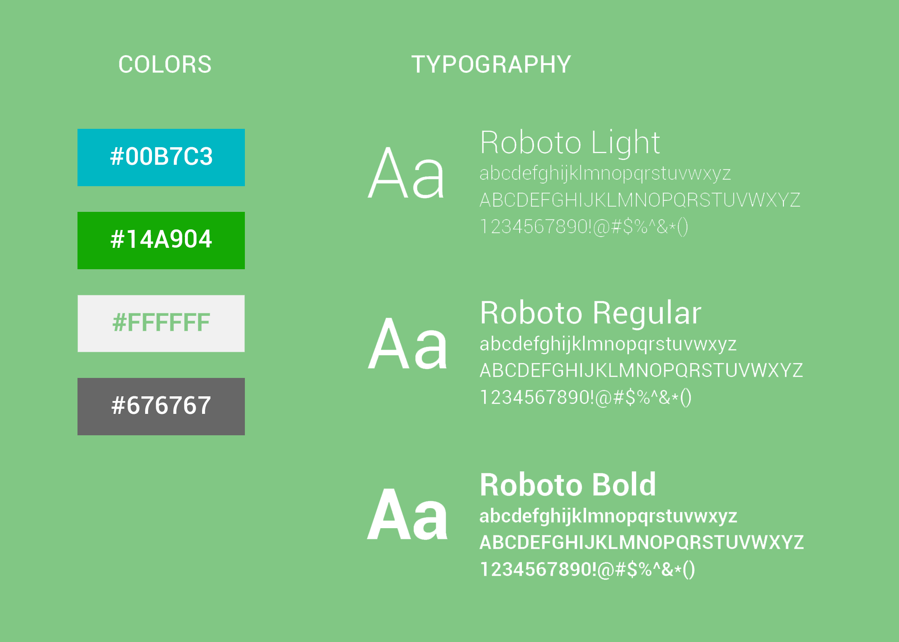

Restore
TIMELINE
Restore was created as part of a quarter-long course at the University of Washington in a three person group.
ROLE
Product Designer
User Research, Wireframing, Prototyping, User Testing, Augmented Reality
OVERVIEW
An Augmented Reality system to assist retail workers in navigating and putting away items to maximize their efficiency and time.
PROBLEM STATEMENT
Retail workers are often asked to juggle many tasks at once; from navigating the store, putting items away, and helping customers, but do not have a way to do so that maximizes their time and efficiency.
DISCOVER
Background
We were tasked with designing an augmented reality program for professionals. My group wanted to help a user group that was very prevalent in every day life, so we chose to help retail workers.
From that target user group, we looked into different sized retail stores to figure out the kind of retail worker we could best serve. We then determined that larger retail stores that have large traffic and quantity of items would be beneficial as they are often hiring workers that need to acclimate to the store and learn the layout.
User Research
When interviewing retail workers at different sized stores, we found that the biggest problem is that they find it difficult to navigate the store because the layout changes. Additionally, when putting back clothes, from say a fitting room, they end up spending more time trying to figure out in what order to put clothes back.
IDEATION
Phone App Sketches
For the phone app, there needed to be functionality to set up the watch app. In order to make the phone app more functional, we added a calendar that would be able to log instances of when the watch app was used as well as a journaling feature, should users be inclined to add notes to those instances.

Phone App Wireframes

DESIGN

Apple Watch App User Flow
The flowchart for the Apple Watch app identifies the features that users may interact with. With the Apple Watch app, there are four features that pulse offers for users who are having a panic or anxiety attack. Each feature offers something different to help users in difference scenarios.

Phone App UI Screens
Focusing on the Apple Watch app, our goal was to design something that was able to provide the user as many options as possible while also being very minimal in the amount of effort needed to use. Our interviews and research showed that users wanted a solution that wouldn't be difficult to navigate, which might exacerbate their anxiety attack.